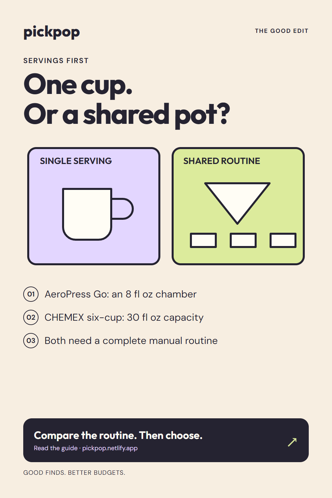
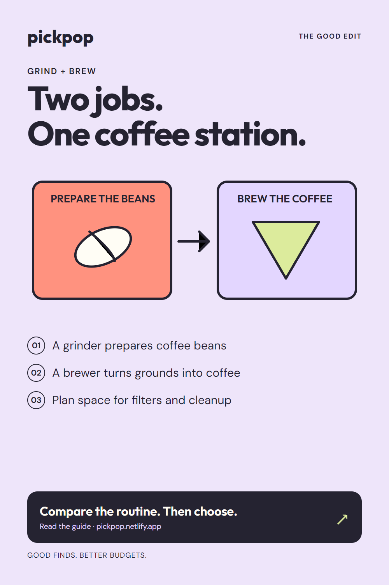
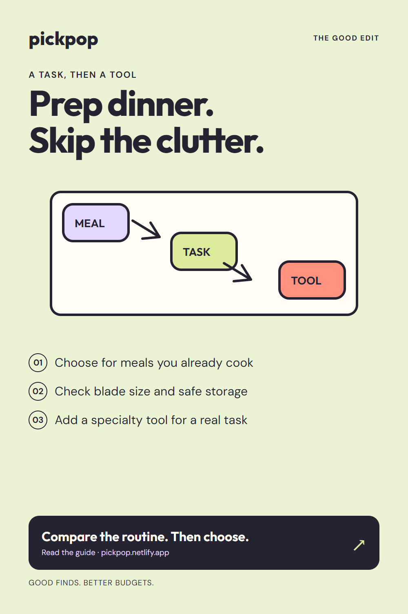
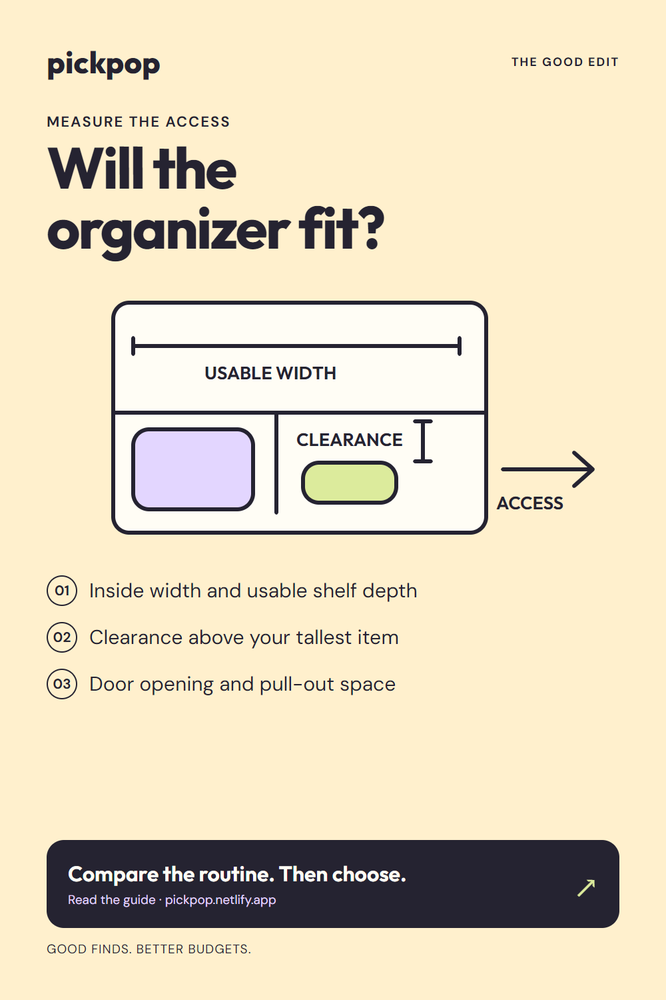

Owner approval received on October13. Not published or scheduled. Native queue capacity and duplicate checks are required; see approved-batch-11-16.json in the parent folder.

Coffee makers for small apartments: one cup or a shared pot?
Compare a small manual coffee routine with a shared pour-over setup. PickPop explains supporting gear, space, and cleanup, with source-reviewed CHEMEX and AeroPress options. Capacity is not a promise of your finished drink size. Read the guide before choosing. This PickPop guide contains Amazon affiliate links. PickPop may earn a commission from qualifying purchases.
Board: Coffee Station Ideas
Review the destination
Coffee station essentials: a grinder is not a brewer
Planning a coffee station? A Baratza Encore grinder and a CHEMEX brewer do different jobs. Use PickPop’s guide to compare your routine, supporting supplies, and cleanup space. You may already have part of the setup; buy for a missing task, not a matching look. This PickPop guide contains Amazon affiliate links. PickPop may earn a commission from qualifying purchases.
Board: Coffee Station Ideas
Review the destination
Small-space kitchen tools: start with the meals you cook
Before adding kitchen tools to a small apartment, list the prep tasks you actually repeat. PickPop’s guide discusses useful tools, including a source-reviewed Victorinox Fibrox chef’s knife, with size and storage considerations. A full-size knife will not suit every space or user. This PickPop guide contains Amazon affiliate links. PickPop may earn a commission from qualifying purchases.
Board: Everyday Kitchen Essentials
Review the destination
Before buying a cabinet organizer, check these three spaces
A cabinet organizer can fit inside and still be awkward to reach. Measure shelf depth, clearance, and the door opening before comparing a bin, shelf insert, or turntable. PickPop’s practical cabinet guide helps you try the layout first and buy for a specific access problem. This PickPop guide contains Amazon affiliate links. PickPop may earn a commission from qualifying purchases.
Board: Small Kitchen Organization
Review the destination